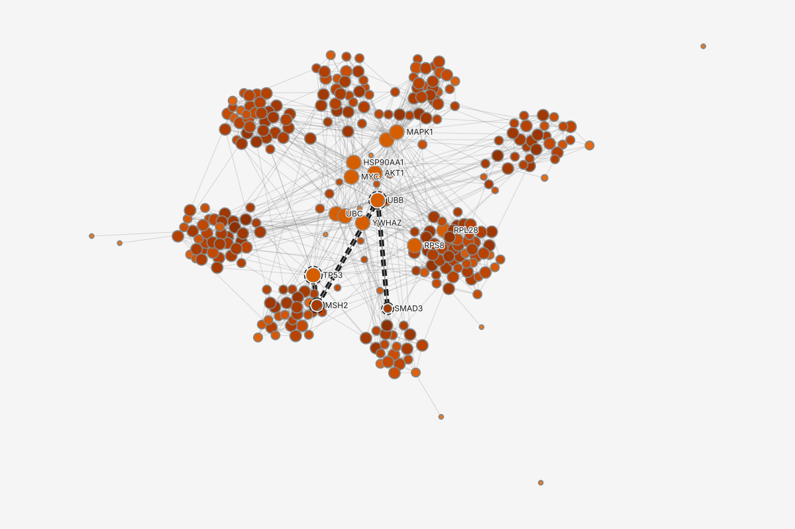
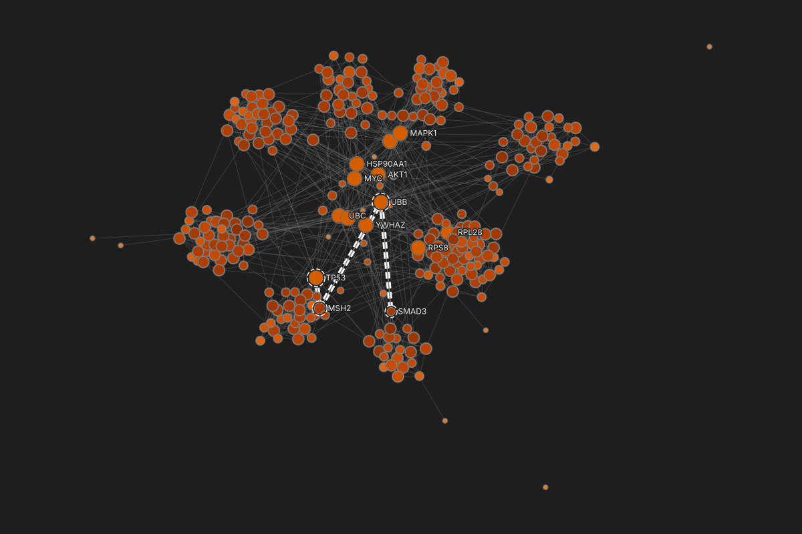

Highlight: path TP53 to SMAD3
4 proteins, 3 interactions
Color: hubs
Hubs, degree 17 to 3412
Color: betweenness
00.0010.010.1
betweenness, 0 to 0.138, log scale; 10 at 0, lightest
Interactions drawn faint (30%)
2 more: Labels, Size by degree
Study material for the between-subjects study "Where the style stack lives" (research/study-schedule.md). Show a participant one frame at a time by opening its link; each frame is 1366 by 768 in grayscale. Both prototypes use the same network, the same 5 sets, 3 paths and 19 style layers. With fewer than 50 participants per prototype the sessions are a pilot and report direction only.

